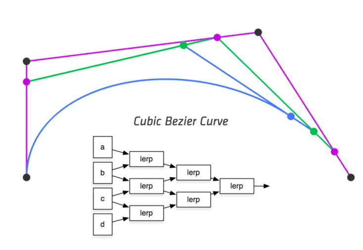
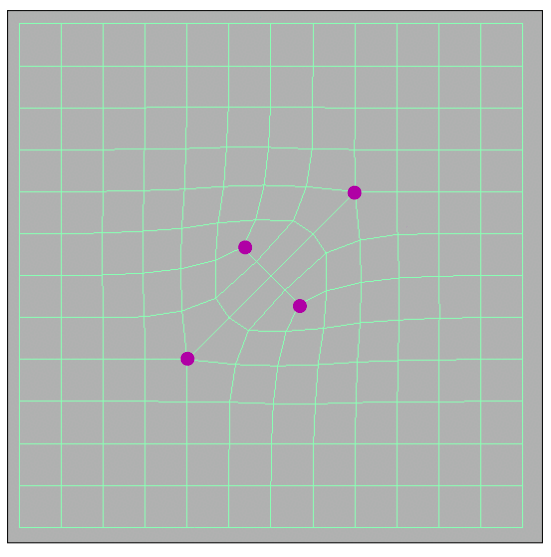
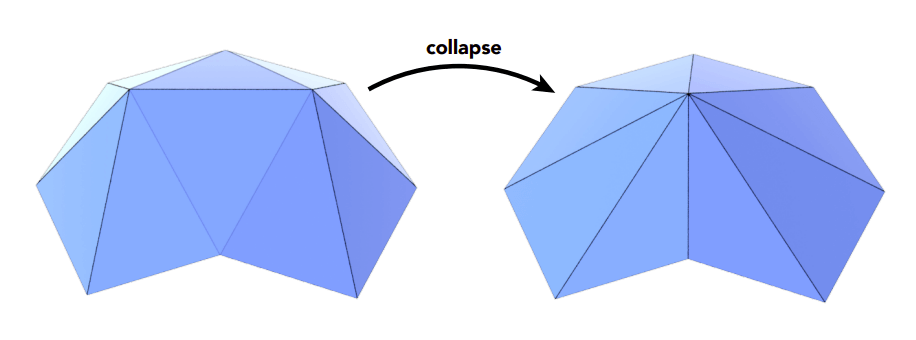
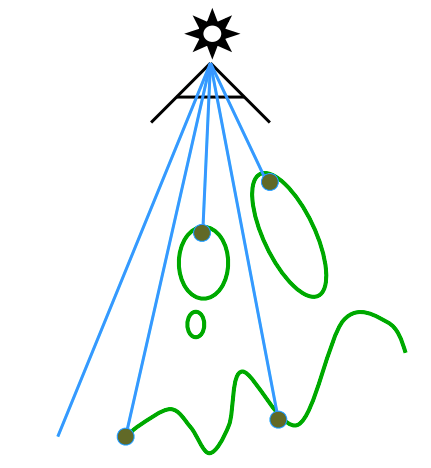

资源
课程
Lecture 10 Geometry 1 (Introduction)
Applications of textures
接下来讲解环境光贴图。
Many, Many Uses for Texturing
modern GPUs, texture = memory + range query (filtering)
现代 GPU 中，纹理 = 内存 + 范围查询
- Texture （纹理）：是指在计算机图形学中，将一张图像贴到三维模型表面上的过程。这张图像通常被称为纹理，可以是彩色的、黑白的、或者包含其他各种信息的。
- Memory （内存）：指的是计算机系统中存储纹理数据的地方，通常是显存。
- Range Query （范围查询） ：这一步是对纹理中的像素进行过滤，通常使用的技术是双线性插值、三线性插值、或者更高级的过滤算法。目的是在渲染时，根据相机和物体之间的距离，获取适当的纹理细节，以减少渲染过程中的资源消耗。
-
General method to bring data to fragment calculations
将数据代入片元计算的一般方法
Many applications
许多应用
-
Environment lighting
环境照明
-
Store microgeometry
存储微几何图形
-
Procedural textures
程序纹理
-
Solid modeling
实体建模
-
Volume rendering
体积渲染
-
…
Environment Map
环境贴图
将环境光的颜色用一张纹理贴图来表示，渲染在犹他茶壶上的样子。
Environmental Lighting
环境光
环境光从各个方向打在球上，入射角等于出射角，因此球的样子可以用来表示一个环境光。
Environment map (left) used to render realistic lighting
环境贴图（左）用于渲染逼真的照明效果
Spherical Environment Map
球形环境贴图
该如何用一个 2D 的贴图来表示一个 3D 的球呢？
Prone to distortion (top and bottom parts)!
容易变形（顶部和底部）！
HDRI 看起来太扭曲了。
Cube Map
A vector maps to cube point along that direction.
矢量映射到立方体沿该方向的点。
The cube is textured with 6square texture maps.
立方体上有 6 个正方形纹理贴图。
给这个球上一个外接正方体，球上的点沿法线方向投影到正方体上，正方体上这个点的颜色即为球的颜色。
Much less distortion!
这种 Cube Map 看上去扭曲变少了！
Need dir->face computation
需要进行 dir->face 计算
Textures can affect shading!
纹理可以影响着色！
Textures doesn’ t have to only represent colors
纹理不一定只能表示颜色
-
What if it stores the height / normal?
如果存储高度/法线呢？
-
Bump / normal mapping
凹凸/法线贴图
-
Fake the detailed geometry
伪造详细的几何图形
这张图通过调整法线使这个对象看上去凹凸不平的，其实模型形状没有变化。
Bump Mapping
凹凸贴图
Adding surface detail without adding more triangles
在不增加三角形的情况下增加表面细节
-
Perturb surface normal per pixel
按像素扰动表面法线
(for shading computations only)
（仅用于着色计算）
-
“Height shift”per texel defined by a texture
纹理定义的每个像素的“高度偏移”
-
How to modify normal vector?
如何修改法线向量？
凹凸贴图将原本点的法线向量 变成了 ，如何计算 的值？
How to perturb the normal (in flatland)
如何在二维平面（flatland）上扰动法线？
-
Original surface normal
原始表面法线向量
-
Derivative at is
处的导数：，就可以求得切线向量。
-
Perturbed normal is then
切线向量的垂直便是法线向量。
How to perturb the normal (in 3D)
如何在三维空间扰动法线？
-
Original surface normal
原始表面法线
-
Derivatives at are
处的导数为（偏导数求切线向量）
-
Perturbed normal is
切线向量的垂直便是法线向量
-
Note that this is in local coordinate!
请注意，这是局部坐标！
Displacement mapping——a more advanced approach
置换贴图——更先进的方法
-
Uses the same texture as in bumping mapping
使用与凹凸贴图相同的纹理
-
Actually moves the vertices
实际移动顶点
法线贴图对于边缘就露馅了！置换贴图相比于法线贴图，效果跟真实。但是对模型面数要求更高。
3D Procedural Noise + Solid Modeling
使用程序生成的噪声贴图作的纹理贴图
Provide Precomputed Shading
提供预计算阴影
环境光屏蔽贴图可以屏蔽一部分环境光，达到类似阴影的效果。
3D Textures and Volume Rendering
3D 纹理和体积渲染
纹理贴图是以 3D 的形式存在的，可用于医学成像等领域。
Introduction to geometry
Examples of Geometry
大千世界中，存在着各种各样的几何图形。该怎样设计一个数据结构来描述它们呢？
Many Ways to Represent Geometry
几何的多种表示方法
Implicit
隐式（相当于矢量图）
-
algebraic surface
代数曲面
-
level sets
一个函数在不同值的地方的集合
-
distance functions
距离函数
-
…
Explicit
显式（相当于点阵图，要么直接定义，要么通过参数来定义）
-
point cloud
点云
-
polygon mesh
多边形网格
-
subdivision, NURBS
细分，NURBS
-
…
Each choice best suited to a different task/type of geometry
每种表示方法都有适合描述的任务/几何类型。
“Implicit” Representations of Geometry
几何的隐式表示法
Based on classifying points
基于点的表示法
-
Points satisfy some specified relationship
点满足某些特定关系
E.g. sphere: all points in 3D, where
例如：用 表示三维空间中，球面上的所有点。
More generally,
更一般地，用函数 来表示一个几何面。
Implicit Surface – Sampling Can Be Hard
隐式表面–采样可能很难

Some tasks are hard with implicit representations
隐式表示法很难完成某些任务。
比如，给我上述式子，很难一眼看出它是一个圆环。反过来，对于一个几何面，很难计算出一个式子来表示它。
Implicit Surface – Inside/Outside Tests Easy
判断一个点 是否在这个几何面上/内/外的情况则很好判断，只需计算 的值与 的关系即可。
比如对于球面：，那么点 是否在球面内？
\because f(3/4,1/2,1/4)=-1/8<0\\ \therefore \mathrm{inside}
Implicit representations make some tasks easy
隐式表示法让某些任务变得简单
“Explicit” Representations of Geometry
几何的显式表示法
All points are given directly or via parameter mapping
直接给出或通过参数映射给出所有点
对于二维空间（屏幕） 中的坐标 通过 得到其在三维空间（几何） 中的映射
Explicit Surface – Sampling Is Easy
显式表示法——采样简便
What points lie on this surface?
这个面上有哪些点？
Just plug in values!
只需输入 值即可！
Explicit representations make some tasks easy
显式表示法使得某些任务变得简单
Explicit Surface – Inside/Outside Test Hard
判断 与球面的位置关系？不好算。
Some tasks are hard with explicit representations
显式表示法在某些任务很困难
No “Best” Representation – Geometry is Hard!
没有最好的表示法——几何是困难的！
"I hate meshes.
I cannot believe how hard this is. Geometry is hard."
— David Baraff Senior Research Scientist Pixar Animation Studios
Best Representation Depends on the Task!
最好的表示方法取决于任务！
More Implicit Representations in Computer Graphics
CG 中更复杂的隐式表示法

Algebraic surfaces
代数曲面
Constructive solid geometry
构造实体几何学
Level set methods
水平集方法
Fractals
分形
Algebraic Surfaces (Implicit)
代数曲面（隐式表示法）
像上面的那种简单的几何还可以，复杂的就歇菜了。
Constructive Solid Geometry (Implicit)
隐式构造几何
使用 Boolean 运算将一个几何体用多个集合体来表示。
Distance Functions (Implicit)
Instead of Booleans, gradually blend surfaces together using
使用以下函数将曲面逐渐混合在一起，而不是布尔函数
Distance functions:
距离函数：
giving minimum distance (could be signed distance) from anywhere to object
给出从任何地方到物体的最小距离（可以是有符号的距离）
An Example: Blending (linear interp.) a moving boundary
举例说明：混合（线性插值）移动边界。blend 后的几何 既有 的特征，又有 的特征。
Can blend any two distance functions d1, d2:
可以混合任意两个距离函数 d1、d2：
- Scene of Pure Distance Functions: Inigo Quilez :: computer graphics, mathematics, shaders, fractals, demoscene and more (iquilezles.org), 使用隐式法表示几何的案例。
Level Set Methods (Also implicit)
水平集表示法
Closed-form equations are hard to describe complex shapes
封闭式方程难以描述复杂形状
Alternative: store a grid of values approximating function
替代方案：存储近似函数值的网格
Surface is found where interpolated values equal zero
在内插值等于零时找到曲面
Provides much more explicit control over shape (like a texture)
提供更明确的形状控制（如纹理）
Level Sets from Medical Data (CT, MRI, etc.)
从 CT、MRI 等数据的水平集
Level sets encode, e.g., constant tissue density
水平集编码，如恒定的组织密度
Level Sets in Physical Simulation
用于物理模拟的水平集

Level set encodes distance to air-liquid boundary
用于编码液态-气态边界距离的水平集。
Fractals (Implicit)
分形
Exhibit self-similarity, detail at all scales
在所有尺度上展现自相似性和细节
“Language” for describing natural phenomena
描述自然现象的“语言”
Hard to control shape!
形状难以控制！
Lecture 11: Geometry 2 (Curves and Surfaces)
Explicit Representations in Computer Graphics
CG 中用显式表示法描述几何
Many Explicit Representations in Graphics
triangle meshes
三角形网格
Bezier surfaces
subdivision surfaces
表面细分
NURBS
point clouds
点云
Point Cloud (Explicit)
Easiest representation: list of points
最简单的表示方法：点 的列表
Easily represent any kind of geometry
可轻松表示任何几何图形
Useful for LARGE datasets (>>1 point/pixel)
适用于大型数据集（点和像素远大于 1）
Often converted into polygon mesh
通常由扫描仪等设备获取，然后要转换为多边形网络。怎么转换，这是个问题。
Difficult to draw in undersampled regions
难以绘制采样不足的区域
Polygon Mesh (Explicit)
多边形面
Store vertices & polygons (often triangles or quads)
存储顶点和多边形（通常为三角形或四边形）
Easier to do processing / simulation, adaptive sampling
更易于处理/模拟、自适应采样
More complicated data structures
数据结构更复杂
Perhaps most common representation in graphics
可能是图形中最常见的表示法
The Wavefront Object File (.obj) Format
波前对象文件（.obj）格式
Commonly used in Graphics research
常用于图形学研究
Just a text file that specifies vertices, normals, texture coordinates and their connectivities
只是一个文本文件，其中指定了顶点、法线、纹理坐标及其连接性
v：表示顶点 (vertex)，用于指定三维模型中的一个点的坐标。后面通常跟着三个浮点数，表示这个点的 x、y、z 坐标。例如：v 1.0 2.0 3.0。vt：表示纹理坐标 (texture coordinate)，用于指定与顶点关联的二维纹理坐标。通常跟着两个浮点数，表示 u 和 v 坐标。例如：vt 0.5 0.5。vn：表示顶点法线 (vertex normal)，用于指定顶点的法线向量。通常跟着三个浮点数，表示法线的 x、y、z 分量。例如：vn 0.0 1.0 0.0。f：表示面 (face)，用于定义多边形的一个面。通常会跟着顶点的引用，有时候还包含纹理坐标和顶点法线的引用。面中的顶点引用可以是简单的索引值，也可以是索引的组合，以斜线 (/) 分隔，用于指定纹理和法线。例如：
f 1 2 3：只引用顶点f 1/1 2/2 3/3：引用顶点和纹理坐标f 1/1/1 2/2/2 3/3/3：引用顶点、纹理坐标和法线。
Curves
Curves 在图形学中的应用：
-
Camera Paths
相机路径
-
Animation Curves
动画曲线
Animating A Fish Along A Path: Motion Path, Flow Path Object (Maya) - YouTube
-
Vector Fonts
矢量字体
Bézier Curves
贝塞尔曲线
Defining Cubic Bézier Curve With Tangent
用切线定义三次贝塞尔曲线
常用的贝塞尔曲线是三次贝塞尔曲线，由 四个点组成。
Bézier Curves – de Casteljau Algorithm
Consider three points (quadratic Bezier)
我们先从三个点 ，二次贝塞尔曲线开始。
Insert a point using linear interpolation
使用线性插值给线段 以参数 插入点 。
Insert on both edges
使用线性插值给线段 以参数 插入点 。
Repeat recursively
递归重复，使用线性插值给线段 以参数 插入点 。
Run the same algorithm for every in
对 ，都使用这样的算法，就能得到一条二次贝塞尔曲线。
Four input points in total
如果是四个控制点 ，则是三次贝塞尔曲线。
Same recursive linear interpolations
同样的方法递归插值计算

Hackery, Math & Design — Acko.net 上对三次贝塞尔曲线的动画展示。
Bézier Curve – Algebraic Formula
贝塞尔曲线 - 代数公式
我们之前使用递归定义了贝塞尔曲线，现在我们要推导它的代数公式。
de Casteljau algorithm gives a pyramid of coefficients
de Casteljau 算法给出了一个系数金字塔（有点像杨辉三角）。 是三次贝塞尔曲线的四个控制点，最终的贝塞尔曲线必须过 这三个点。
Every rightward arrow is multiplication by ,
每个向右的箭头都是 的乘法
Every leftward arrow by (1–t)
每个向左箭头乘以
根据这个系数金字塔可以求得由 表示的二次贝塞尔曲线上的点 。
Bézier Curve – General Algebraic Formula
贝塞尔曲线的通项公式
Bernstein form of a Bézier curve of order
阶贝塞尔曲线的伯恩斯坦形式
-
：
-
Bézier curve order
贝塞尔曲线阶数
(vector polynomial of degree )
（矢量多项式的 阶）
-
-
：
-
Bézier control points
贝塞尔控制点
-
(vector in )
维空间里的向量
-
-
：
-
Bernstein polynomial
伯恩斯坦多项式
-
(scalar polynomial of degree )
( 度的标量多项式）
-
Bernstein polynomials（看着挺复杂的，但是它也是多项式，有点像二项式分布）：
Bézier Curve – Algebraic Formula: Example
好的！我们得到了贝塞尔曲线的通项公式，现在我们举个例子。
Bernstein form of a Bézier curve of order :
阶贝塞尔曲线的伯恩斯坦形式
Example: assume and we are in
我们假设一个三维空间里的三维贝塞尔曲线。
i.e. we could have control points in 3D such as:
即，我们在三维空间里获得四个控制点。
These points define a Bezier curve in 3D that is a cubic polynomial in :
这些点在三维空间中定义了一条贝塞尔曲线，它是以 为单位的三次多项式：
Cubic Bézier Basis Functions
三次贝塞尔函数
Bernstein Polynomials：
其中的控制点随 的变化曲线如图。
Properties of Bézier Curves
贝塞尔曲线的特性
Interpolates endpoints 内插端点
- For cubic Bézier 对于三次贝塞尔曲线：
Tangent to end segments 与端点相切
- Cubic case：
Affine transformation property 仿射变换特性
-
Transform curve by transforming control points 通过变换控制点来变换曲线
先仿射变换再计算贝塞尔曲线 和 先计算贝塞尔曲线再仿射变换 的计算结果是相同的。但是投影变换不行！
Convex hull property 凸包性质
- Curve is within convex hull of control points 贝塞尔曲线始终在由控制点组成的凸包中
Higher-Order Bézier Curves?
高阶贝塞尔曲线？
点太多了，而且牵一发而动全身，不好控制，我不能接受。
Piecewise Bézier Curves
分段贝塞尔曲线
Instead, chain many low-order Bézier curve
Piecewise cubic Bézier the most common technique
将一条曲线用多段贝塞尔曲线来表示，是很常用的技术。
Widely used (fonts, paths, Illustrator, Keynote, …)
广泛用于（字体、路径、Illustrator、Keynote…）
Demo – Piecewise Cubic Bézier Curve
- Bezier Curve Edit (hws.edu) 这个网站可以让你好好地玩一玩 PS 里的钢笔工具！
Piecewise Bézier Curve – Continuity
分段贝塞尔曲线 - 连续性
Two Bézier curves
两条贝塞尔曲线。
continuity:
第一段的终点亦是第二段的起点，那么我们把这个点称之为 连续。
continuity:
中间这个点与周围两个控制点共线且刚好为这两个控制点的中点，那么我们把这个点称之为 连续。
Other types of splines
其它种类的曲线
图中这个金属东东控制这个曲线必须经过的点，至于这条曲线怎么弯，交给棍棍。
-
Spline
-
a continuous curve constructed so as to pass through a given set of points and have a certain number of continuous derivatives.
一条连续曲线，其构造是为了通过一组给定的点 点，并有一定数量的连续导数。
-
In short, a curve under control
简而言之，曲线受到控制
-
-
B-splines
B 样条曲线，这玩意据说太复杂了课上都不讲了
-
Short for basis splines
基础样条曲线的简称
-
Require more information than Bezier curves
比贝塞尔曲线需要更多信息
-
Satisfy all important properties that Bézier curves have (i.e. superset)
满足贝塞尔曲线的所有重要特性（即它是贝塞尔曲线的超集）
-
Important Note
In this course
-
We do not cover B-splines and NURBS
我们不涉及 B-样条曲线和 NURBS
-
We also do not cover operations on curves (e.g. increasing/decreasing orders, etc.)
我们也不涉及对曲线的操作（例如增阶/减阶等）。
-
To learn more / deeper, you are welcome to refer to Prof. Shi-Min Hu’ s course:
若想了解更多/更深入的内容，欢迎参考胡事民老师的课程：清华大学-计算机图形学基础（国家级精品课）_哔哩哔哩_bilibili
Surfaces
Bézier Surfaces
贝塞尔曲面
Extend Bézier curves to surfaces
将贝塞尔曲线扩展到曲面
Bicubic Bézier Surface Patch
Bezier surface and array of control points
贝塞尔曲面和 控制点阵列
Visualizing Bicubic Bézier Surface Patch
从四个贝塞尔曲线上的点再整一条贝塞尔曲线，这条曲线随参数变化形成的面，便是 Bicubic Bézier Surface（双三次贝塞尔曲面）。
**Evaluating Surface Position For Parameters **
For bi-cubic Bezier surface patch,
用于双立方贝塞尔曲面修补
Input: control points
输入： 控制点
Output: 2D surface parameterized by in
输出：参数为 中 的二维曲面
Method: Separable 1D de Casteljau Algorithm
方法：可分离的 1D de Casteljau 算法
Separable 1D de Casteljau 算法是 de Casteljau 算法的一种变体，用于在一维空间中对 Bézier 曲线进行求值。它是通过将原始的 de Casteljau 算法进行简化和优化而得到的。
de Casteljau 算法是一种递归方法，用于在二维空间中计算 Bézier 曲线上的点。然而，当 Bézier 曲线是一维的（即线性曲线）时，可以使用更简单的算法来进行计算，这就是 Separable 1D de Casteljau 算法。
这个算法的关键思想是将一维 Bézier 曲线的控制点集合视为一系列水平或垂直的线段，并通过对这些线段进行递归求解来计算曲线上的点。由于每个维度都可以单独处理，因此称为"可分离"。
算法的步骤如下：
- 对于给定的参数值 t，在每个维度上对控制点进行插值。例如，在水平方向上进行插值，然后在垂直方向上进行插值，或者反之。
- 重复此过程，直到每个维度上只剩下一个点为止。
- 最终得到的点就是 Bézier 曲线上的点。
Separable 1D de Casteljau 算法相对于传统的 de Casteljau 算法来说更加简单和高效，特别适用于一维 Bézier 曲线的求值。
Goal: Evaluate surface position corresponding to
目标：评估 对应的曲面位置
-separable application of de Casteljau algorithm
- de Casteljau 算法的分离应用
-
Use de Casteljau to evaluate point u on each of the 4 Bezier curves in u. This gives 4 control points for the “moving” Bezier curve.
用 de Casteljau 方法求出 4 条贝塞尔曲线上的点 ，即 . 这样就得到了 "移动 "贝塞尔曲线的 4 个控制点
-
Use 1D de Casteljau to evaluate point on the “moving” curve
使用 1D de Casteljau 算法评估 "移动 "曲线上的点
就是这么一阵操作！
Mesh Operations: Geometry Processing
-
Mesh subdivision
表面细分
-
Increase resolution
提高分辨率
-
-
Mesh simplification
表面简化
-
Decrease resolution; try to preserve shape/appearance
降低分辨率；尽量保持形状/外观
-
-
Mesh regularization
表面正则化（使表面上的三角形的面积尽可能相同）
-
Modify sample distribution to improve quality
修改样本分布以提高质量
-
Lecture 12 Geometry 3
Mesh Operations: Geometry Processing
Mesh Subdivision
细分
Common subdivision rule for triangle meshes
三角形网格的常用细分规则
First, create more triangles (vertices)
首先，创建更多三角形（顶点）
Second, tune their positions
其次，调整它们的位置
Loop Subdivision
循环细分
-
Split each triangle into four
将一个三角形分割成四个
-
Assign new vertex positions according to weights
根据权重分配新的顶点位置
-
New / old vertices updated differently
以不同方式更新新/旧顶点
-
Loop Subdivision — Update
对于已存在的点 A、B、C、D，再往其中间添加一个白点。
For new vertices:
设置白点的坐标为：
For old vertices (e.g. degree 6 vertices here):
对于原先的点（假设新添加的点连有 6 个原先的点，度为 6）：
Update to:
更新原先的点的坐标
-
为顶点的度
-
Loop Subdivision Results
循环细分的结果。看起来好极了！就是它只能支持三角形面。
Catmull-Clark Subdivision (General Mesh)
这个算法可以处理任意面。
对于一堆四边形面中的某些三角形面，就会产生 Extraordinary vertex 奇异点（这个点的度不为 4）
Each subdivision step: 每个细分步骤
-
Add vertex in each face
在每个面上添加顶点
-
Add midpoint on each edge
在每条边添加中点
-
Connect all new vertices
连接所有新顶点
After one subdivision: 经过一次细分：
-
How many extraordinary vertices?
有多少个奇异点？4。
-
What are their degrees?
它们的度数是多少？3。
-
How many non-quad faces?
有多少个非四边形面？没有了，这个细分操作把所有非四边形面全部转为了四边形面，真是太厉害了！

我再细分一次。不会有非四边形面。
我再再细分一次。怎样都不会有非四边形面。
FYI: Catmull-Clark Vertex Update Rules (Quad Mesh)
参考：Catmull-Clark 顶点更新规则（四维网格）
以此法更新网格点的坐标。
Convergence: Overall Shape and Creases
趋同： 整体形状和褶皱
这个算法效果。
Mesh Simplification
面减少会降低精度，但是远处看上去差不多。这么做可以节约性能。
Goal: reduce number of mesh elements while maintaining the overall shape
目标：在保持整体形状的前提下减少网格元素的数量
Collapsing An Edge
折叠边缘

-
Suppose we simplify a mesh using edge collapsing
假设我们使用边缘折叠来简化网格。那么这个点的坐标如何？
Quadric Error Metrics
二次误差度量
-
How much geometric error is introduced by simplification?
简化会带来多少几何误差？
-
Not a good idea to perform local averaging of vertices
对顶点进行局部平均不是一个好主意。图上看上去形变太大了。
-
Quadric error: new vertex should minimize its sum of square distance (L2 distance) to previously related triangle planes!
四边形误差：新顶点应最小化其与先前相关三角形平面的 平方距离总和（L2 距离，就是机器学习里的那个概念了）！
Quadric Error of Edge Collapse
-
How much does it cost to collapse an edge?
折叠一条边的成本是多少？
-
Idea: compute edge midpoint, measure quadric error
思路：计算边缘中点，测量四边形误差
-
Better idea: choose point that minimizes quadric error
更好的思路：选择二次方误差最小的点
-
More details: Garland & Heckbert 1997.
Simplification via Quadric Error
通过四边形误差进行简化
Iteratively collapse edges
迭代地折叠边缘
Which edges? Assign score with quadric error metric*
哪些边缘？使用二次误差度量标准*进行评分
-
approximate distance to surface as sum of distances to planes containing triangles
将到表面的近似距离视为到包含三角形的平面的距离之和
-
teratively collapse edge with smallest score
迭代地折叠边缘，选择得分最小的边缘
-
greedy algorithm… great results!
贪婪算法……取得了很好的结果！（尽管每次迭代后都会改变表面形状，使得选取的边缘不一定是最优解，但是性能好，就这么采用了）
* (Garland & Heckbert 1997)
Shadow Mapping
-
An Image-space Algorithm
图像空间算法
-
no knowledge of scene’ s geometry during shadow computation
在计算阴影时不需要场景几何信息
-
must deal with aliasing artifacts
必须处理深度图中的走样伪影
-
-
Key idea:
关键思想：
-
the points NOT in shadow must be seen both by the light and by the camera
不在阴影中的点必须同时被光线和相机看到
-
Pass 1: Render from Light

-
Depth image from light source
来自光源的深度图像

将观察者坐标视为灯光，获取观察到的深度贴图。
Pass 2A: Render from Eye
-
Standard image (with depth) from eye
获取摄像机观察到的深度贴图。
Pass 2B: Project to light
-
Project visible points in eye view back to light source
将眼睛视图中的可见点投射回光源。
如果摄像机和灯光观察到的这个点深度值一致，则我们可认定摄像机和灯光观察到的是同一个点，视为这个点可见。
如果摄像机和灯光观察到的这个点深度值不一致，则我们可认定摄像机和灯光观察到的不是同一个点，阻挡之。
Visualizing Shadow Mapping
-
Compare with and without shadows
比较一下。啊！真实感又提升了！
-
The scene from the light’ s point-of-view
从灯光位置观察视图
-
The depth buffer from the light’ s point-of-view
我们只需要获取灯光观察视图后得到的深度视图。
-
Comparing Dist (light, shading point) with shadow map
将 Dist（光线，阴影点）与阴影贴图进行比较
Green is where the distance(light, shading point) ≈ depth on the shadow map
绿色是距离（光线、阴影点）≈阴影贴图深度的地方。（不该出现阴影）
Non-green is where shadows should be
非绿色是阴影应该出现的地方。看上去不是很连续，这是因为浮点数比较之间有误差……得设计一种容错的比较方法
-
Well known rendering technique
被广泛应用的渲染技术
-
Basic shadowing technique for early animations (Toy Story, etc.) and in EVERY 3D video game
早期动画（《玩具总动员》等）和所有 3D 视频游戏的基本阴影技术
-
Problems with shadow maps
阴影贴图的问题
-
Hard shadows (point lights only)
硬阴影（仅限点光源）
-
Quality depends on shadow map resolution (general problem with image-based techniques)
质量取决于阴影贴图的分辨率（基于图像的技术的普遍问题）
-
Involves equality comparison of floating point depth values means issues of scale, bias, tolerance
涉及浮点深度的相等比较 值的相等比较意味着比例、偏差和容差问题
- Hard shadows vs. soft shadows
如果存在软阴影，则说明光源是有大小的。